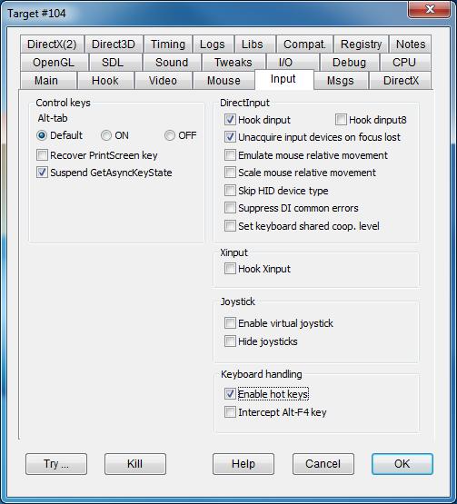

|
Alt-tab |
NODISABLEALTTAB DISABLEALTTAB |
A program may try to control the behavior of the Alt-tab sequence by placing a keyboard hook and filtering this key sequence. The radio button allows to leave this unaltered (DEFAULT) or bypass the program's attempt to disable Alt-tab (ON) or disable the Alt-tab sequence (OFF). |
|
Recover PrintScreen key |
NODISABLEPRINT |
A program may try to disable the PrintScreen key by placing a keyboard hook and filtering this key sequence. This flag bypass the program's attempt to disable PrintScreen. |
|
Suspend GetAsyncKeyState |
FIXASYNCKEYSTATE |
A program may detect keyboard and mouse events (pressed keys, mouse buttons pressed) by using the GetAsyncKeyState call that works no matter if the program is currently active or not. In case of fullscreen applications, that may do little difference, but when running in window mode the detection of key states may cause a unwanted reaction from the program while clicking on top of another window. The flag inhibits the asynchronous detection of key states while the program is not currently active. In particular, the flag was designed to fix a GOG's patch in "Wizards and Warriors" meant to ensure a mouse click reaction, but that had the side effect of making the game react to clicks on other windows. |
|
Hook dinput |
HOOKDI |
Hooks DirectInput libraries, making sure that the DirectInput modes are appropriate for a non fullscreen program and enabling all other flags in the same group. |
|
Hook dinput8 |
HOOKDI8 |
Hooks DirectInput8 libraries, making sure that the DirectInput8 modes are appropriate for a non fullscreen program and enabling all other flags in the same group. |
|
Unacquire devices on focus lost |
UNACQUIRE |
Unacquire DirectInput/DirectInput8 devices when they lose focus and acquire them back when they regain focus. This option should be set if the program using DirectInput libraries keeps listening to mouse input even when the program's window is inactive, or when it keeps ignoring mouse input even when the program's window becomes active once again. |
|
Emulate mouse relative movement |
EMULATERELMOUSE |
Emulates the DirectInput detection of relative mouse position by keeping the mouse at the center of the window and looking for movements. It should be used whenever the native DirectInput mechanism doesn't work properly. |
|
Skip HID device type |
SKIPDEVTYPEHID |
Newer versions of Windows may have access to new types of HID (human interface device) that can interfere with old games that can only recognize the three traditional devices (mouse, keyboard, and joystick). This flag masks the presence of such devices. It fixes a crash in the game "Jetboat Superchamps 2," the only known game that requires this setting. |
|
Suppress DI common errors |
SUPPRESSDIERRORS |
This flag forces some DirectInput operations to return a successful completion rather than an error even in the event of a failure. Some programs work more reliably with this flag turned on. |
|
Set keyboard shared coop. level |
SHAREDKEYBOARD |
Forces DirectInput cooperative level to NONEXCLUSIVE mode for the keyboard. Use this flag when the program shows DirectInput errors related to keyboard access. The game "Planet of the Apes" can't process the PrintScreen key without this flag. |
|
Hook xinput |
HOOKXINPUT |
Preliminary xinput Xbox 360 controller emulation. |
|
Enable virtual joystick |
VIRTUALJOYSTICK |
Some games require a joystick. If a joystick is not connected, this flag emulates a rudimentary joystick, controlled by mouse movement. The X and Y axes are controlled by mouse movement, the two primary joystick buttons are controlled by left and right click, and the joystick centering function is controlled by the middle mouse button (if available). The joysticks position and its button states are shown in a cross-shaped viewfinder that overlaps the game window. See Virtual Joystick for configuration details. |
|
Hide joysticks |
HIDEJOYSTICKS |
This flag tries to hide the joystick from the game. |
|
Enable hot keys |
ENABLEHOTKEYS |
DxWnd can set some special keys (e.g. Alt, Fn) to trigger special actions, storing the key association in the DxWnd.ini file. This flag enables hot key definitions. If unchecked, all hot keys are disabled for this program. |
|
Intercept Alt-F4 key |
HANDLEALTF4 |
Intercepts the Alt-F4 key in the message processing loop to immediately terminate the program, avoiding any programmed exit procedure (cinematics, save state warnings, ads...). Only has an effect if the game is doing the message processing loop. |